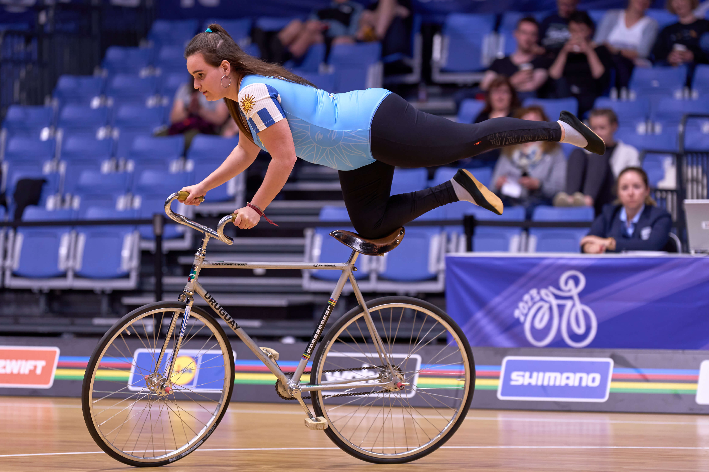
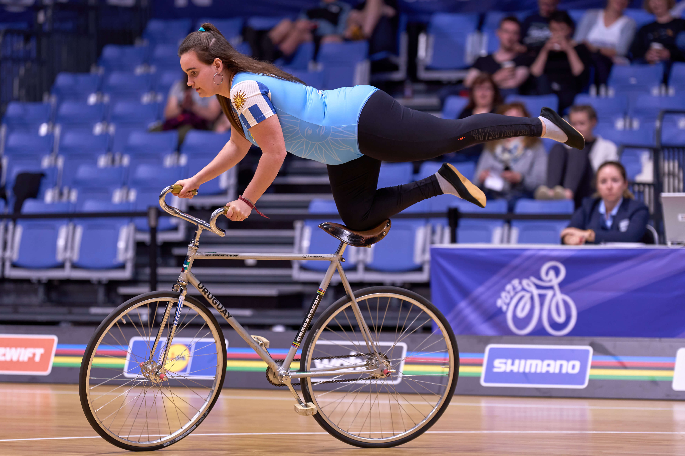

Galeria
En esta sección encontrarás imágenes y videos de nuestros entrenamientos, talleres, exhibiciones y competencias. A través de estas fotos, documentamos el crecimiento del ciclismo artístico en Uruguay, reflejando el trabajo, la evolución y los momentos clave de esta disciplina.
📍 Explora nuestro recorrido y conoce más sobre el deporte
 
